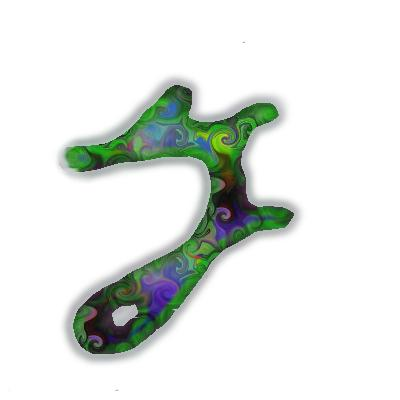
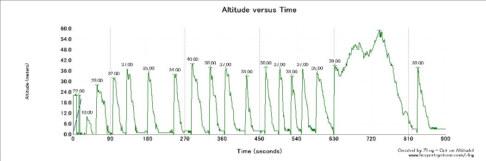

 YpsilonはSG2のコピーが目的なので、フライングテールを除いては諸元をいじるつもりは無いのですが、 Drela氏も興味を示している、翼弦の短いバージョンはどうかなと思い、そっち方面の検討を始めたのが2006年。
いろいろと考えながら作っているわけです。
SG2の図面は、Charls river RCのサイトにあります。
設計が変わったので、名前も変えますが、芸の無いところで「Ypsilon-2」です。
| 試作機 | |
| 全備重量 | 224g |
| 翼長 | 1500mm |
| 翼面積 | 19.6dm^2 |
| 翼面荷重 | 11.4g/dm^2 |
| 受信機 | Berg 4L 改 |
| ラダー | JR DS381 |
| エレベータ | GWS Pico BB |
| エルロン | OK 1108x2 |
| フラップ | OK 1108x2 |
| バッテリ | NiMH 150mAh |
| 重心 | ??? |
試作機は、Y 1号機の胴体の主翼を変えたものです。
主翼の細かい緒元は企画のところを見てください。
翼弦をかえるにあたって、どんな機体になるか一応考えてみました。
基本的に、現行Yの翼弦を変えただけの物です。
あまりできがよくないので「0号機」ではなく「試」です。いくつか工法とか手順を変えてみたのが
ことごとく裏目に出て、60点ぐらいのできです。飛行性能に影響しそうなミスもあり。
飛ばしてきました
週末に少し飛ばしてきました。前回もそうでしたが、またしても大会までにちゃんと調整を取りきれない
という状況です。まあ、Y1があるので、去年よりはましですが。
飛ばしてみた感想ですが、「じゃじゃうまになっちまった」でしょうか。
こんな書き方をしましたけど、基本的にはちゃんととびますよ。Y2との差も
FW3とY1の差よりも極小さいので、両立は難しくなさそうです。
FW3とYはの操縦性の違いは、基本的に上反角の大きさの違いからきていると思うのだけれど、
旋回中の各舵の打ち方がだいぶ違う。結局、両立できなくなってFW3は使わなくなってしまった。
おまけ
初飛行の後半は、サーマルも出ていい感じになってきました。
記録のあるときのベストフライト。
|
|
5つか6つのサーマルを渡リ歩いています。いつもあまり長く一つのサーマルにとどまっていないので、
こんな感じのフライトになりますが、10分くらいは飛んでいます。最高は140mですが、緊張しないでフライトできる高さはこのくらいまでです。これ以上高いとちょっと怖い。見えないし。
このときは全面リフトっぽくて、サーマルも頻繁に出ていたのでまだまだいけそうでしたが、
首が痛くなってきたのと、バッテリーが心配(満充電から25分をリミットにしている)だったので、
おろしました。
あとは、連投の練習

|
いつもやっている練習で、タイマーを1分のカウントダウンで繰り返しにして、区切り以外ではおろさない
ように飛ばします。青い方がそのデータですが、ちゃんと投げた赤い方に比べて明らかに
低いですね。このあたりも課題だし、大会では、ちゃんと投げてた時との差と、ランチのロスの時間を
考えてどっちを取るか検討する必要がありそうですね。
でも、何しろこの練習は燃えます。最近はだいぶうまくなってきて、練習ではめったにショート
しなくてすむようになりました。このときも、最後の方はだめですが、まあまあです。
これが大会でできればいいんですけどね。
[[セッティング関連(1)]] ミキシング
セッティングもまだ煮詰まってませんけど。
測ってない。今度測っておきます。
|
|
|
|
| 強風で飛ばせなかったのですが、写真だけ撮ってきました。 | 裏は縞々のグラデーション。 | Y1と並べてみました。翼弦の短いのがわかりますね。 |
|
|
|
|
| 一応ちゃんと6サーボ。エルロンの出っ張りは思ったより大きくなりませんでした。 | フラップが．．．．． | がばっと下がってブレーキング。わけあってちょっと減らす予定。 |
今回は、「こうなるはず」で機体を作ったので、ちゃんと評価をしてやろうと思ってます。
早朝の無風時にY1とY2のランチ比べをしてみました。
当然のことながら、Y2の方が高く上がるはずです。
一応、ちゃんと測るためにキャッチ＆ランチでなく、回収してちゃんと投げてます。
まずは、Y1の方です。
|  |

|
主翼しか作ってないのであまり写真は無いのですが、こんな感じ。
バッグから出したところ。
定番の49g/m^2のグラスを使っています。補強の仕方は6サーボ仕様。


まだマイラーが張り付いているのですが、間違って、ペグの補強を右翼につけてしまってます。この後、左翼にもつけてます。
ロゴは、適当に書いた手書きのだったのを変えました。アインシュタインの手書きの原稿から「ｙ」の字を拾ってきて
加工したものです。
重さは、55gと56gでした。いつもと違う手順を試してみたせいで、樹脂の搾りが甘く、予定より重くなってしまいました。
3枚目の写真は、Ypsilonの主翼との比較です。幅が狭いのがわかります。


出来上がった機体の体重です。224g。うーん、まあ、やっぱり皮算用よりは重くなってますね。
カーボンホーンです。下にあるのが図面です。詳細はそのうちアップします。